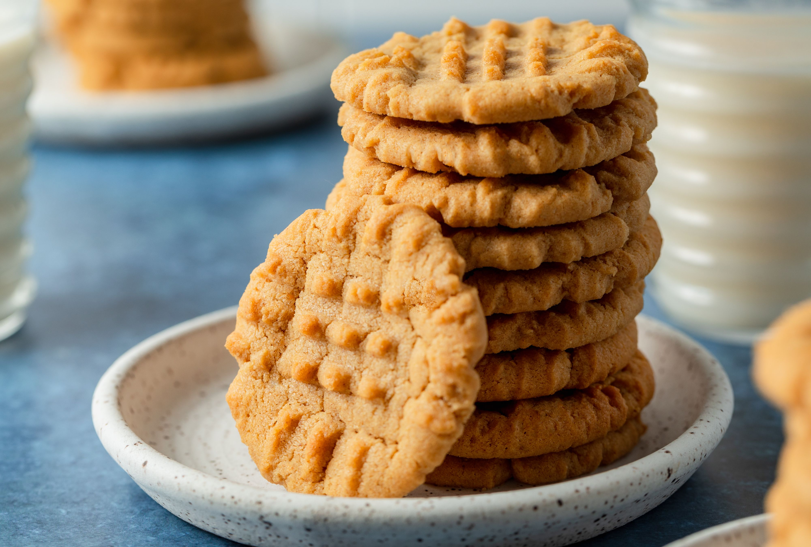

Peanut Butter Cookie

Ingredients
- 1 cup unsalted butted (room temp)
- 1 cup of sugar
- 3/4 cup of brown sugar
- 2 large legs (room temp)
- 2 teaspoons of vanilla extract
- 1 cup of creamy peanut butter
- 3 cups plus 2 tablespoons of all purpose flour
- 1 teaspoon of baking soda
- 1 teaspoon of baking powder
- 1/2 teaspoon of salt
1/3 cup of sugar (for rolling, optional)
Directions
- Cream the softened butter and both sugars together until smooth
- Add the egg and mix until combined
- Add the vanilla and peanut butter and mix until combined
- In a separte bowl, toss the flour, baking soda, baking powder and salt together.
- Add to the wet Ingredients and mix until combined. Dough will be thick yet sticky.
- Cover tightly and chill for 3 hours
- Preheat over to 350 degrees F
- Line two large baking sheets with parchment paper or silicone baking mats
- Roll balls of dough (1.5 tablespoons per cookie) into sugar.
- Place balls on baking sheet 2 inches apart. Pressing a fork into the top, giving the cookie that classic Peanut Butter Cookie look.
- bake for 11 minutes or until very lightly browned on the sides.
- Remove from oven and let cool for 5 minutes before transferring to a wire rack to cool completely.